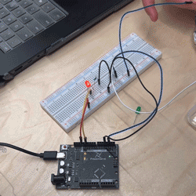

In this lesson we built a touch sensor using Arduino. When the "wire" is touched, the circuit will work. The main principle is that the capacitance changes caused by human fingers or other conductive objects touching the sensor, causing the LED to light up. So the parts are actually very simple, you just need to connect the LED to the resistor and then connect it to the Arduino main board.

"Papier Machine" is a book that compiles six interactive electronic paper toys. These toys are designed to
introduce the
fundamentals of electronics through playful and hands-on activities that use paper as the primary
material.The project
presenting electronics in a fun and accessible format , it encourages learning and exploration in children
and adults
alike. It allows users to understand and experiment with basic electronic mechanisms such as gyroscopes,
resistors, and
capacitors through the direct tactile experience provided by paper.
https://www.thisiscolossal.com/2018/01/papier-machine-a-book-of-electric-diy-projects/